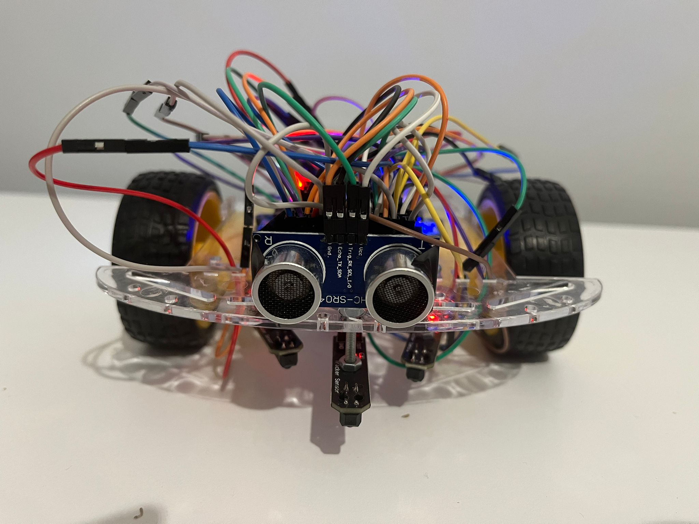
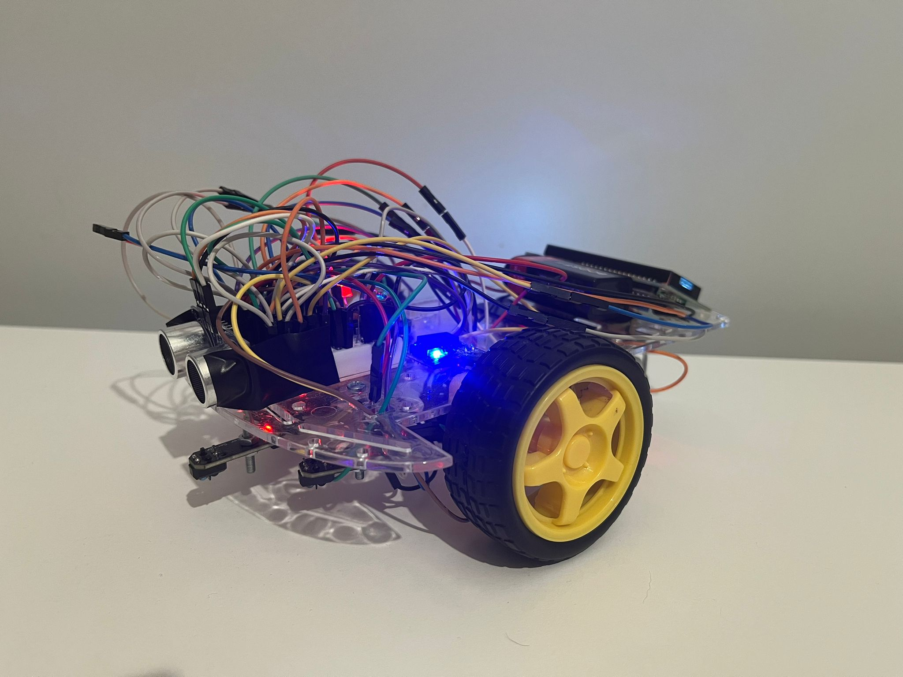
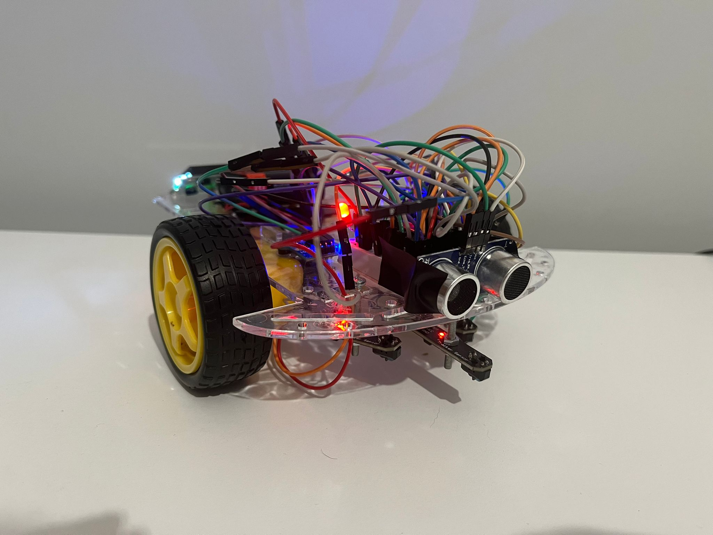
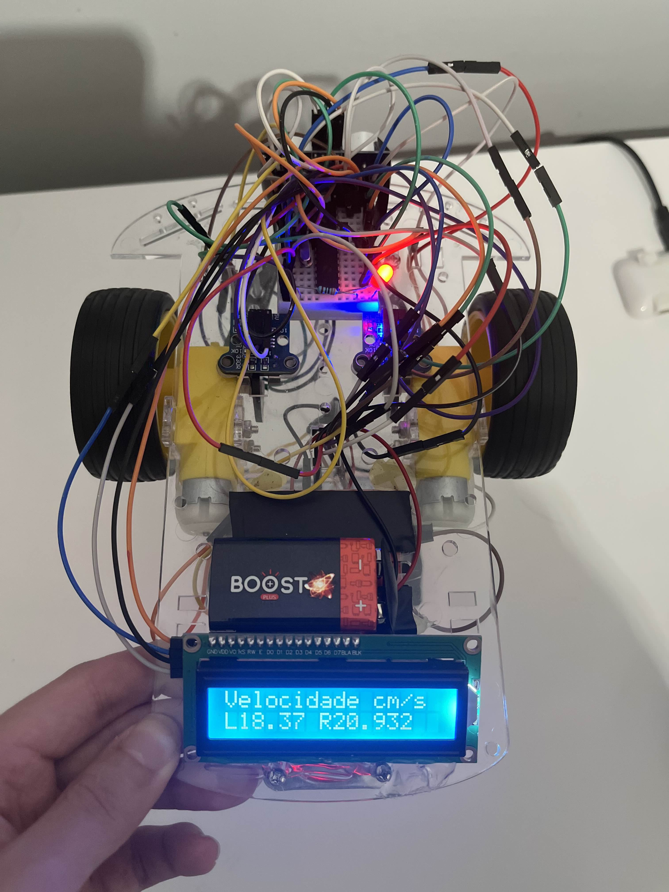
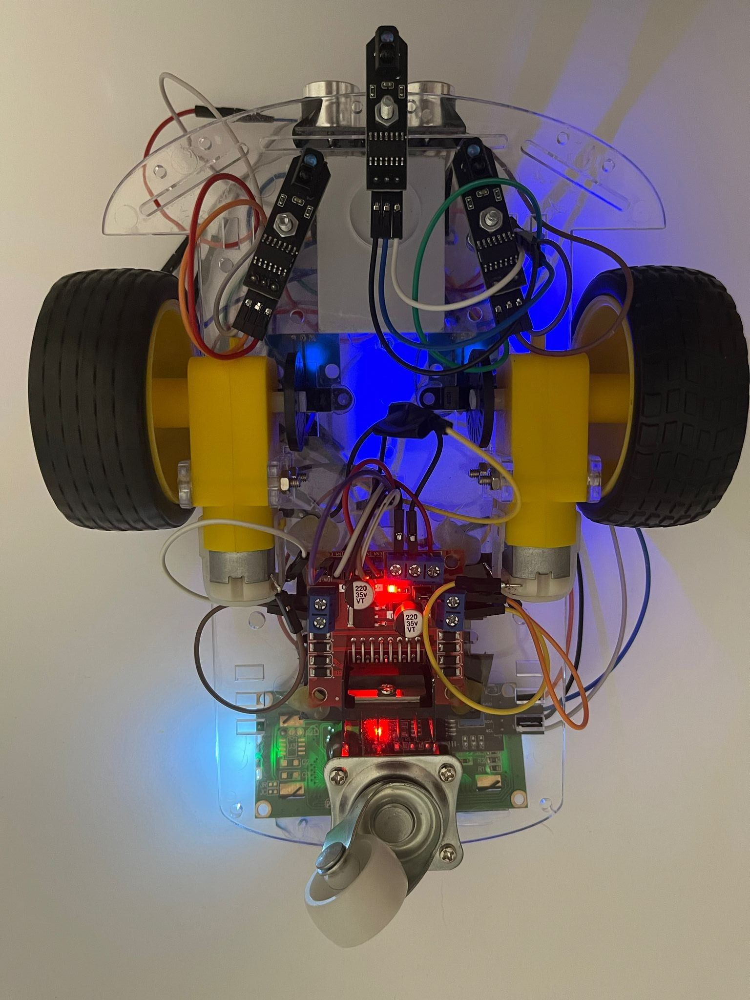
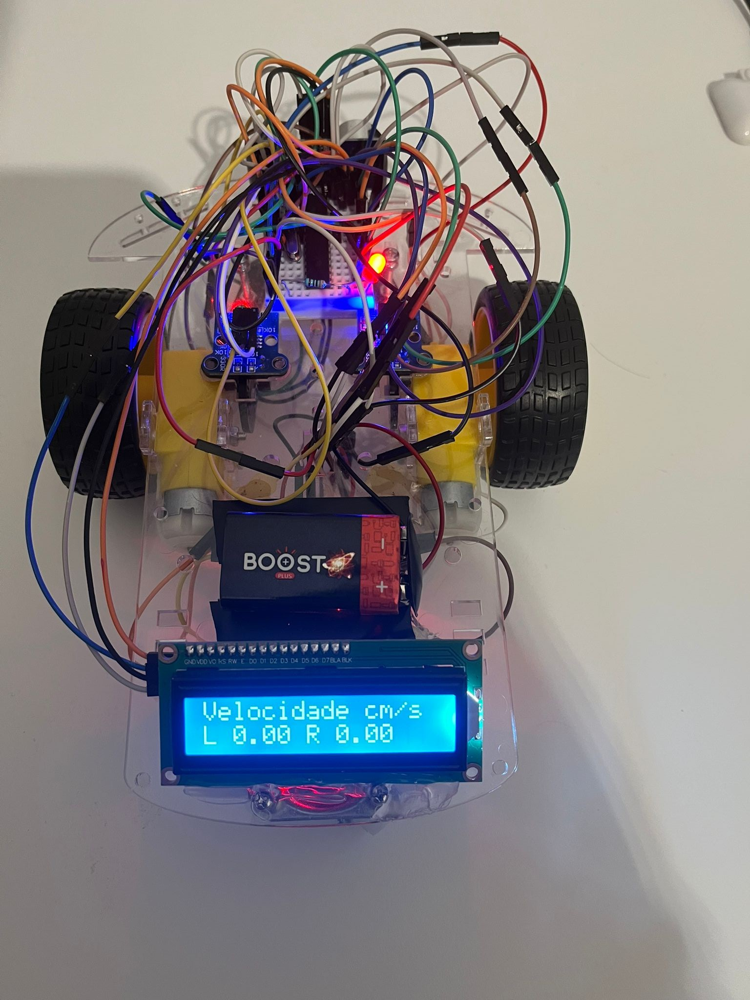
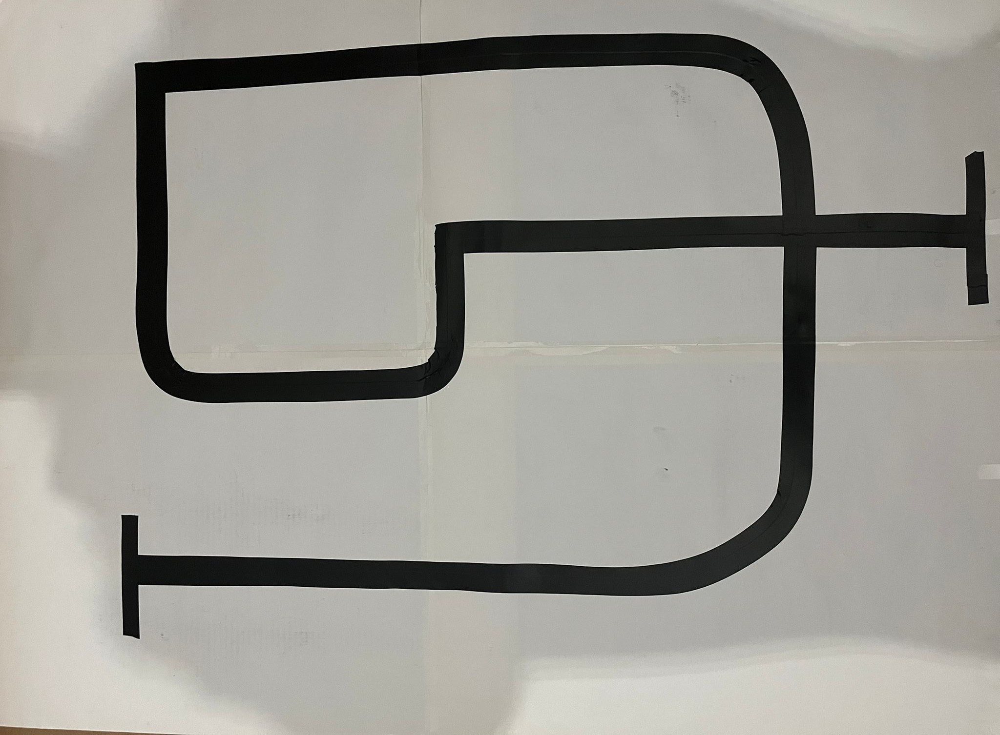

Arquitetura
Nesta seção, serão apresentados os resultados obtidos durante a execução do percurso pelo AGV (Automated Guided Vehicle). As fotos e vídeos ilustram o desempenho do veículo em situações práticas, destacando sua capacidade de seguir a linha traçada e reagir a obstáculos no trajeto.






Circuito desenhado para o AGV percorrer:
